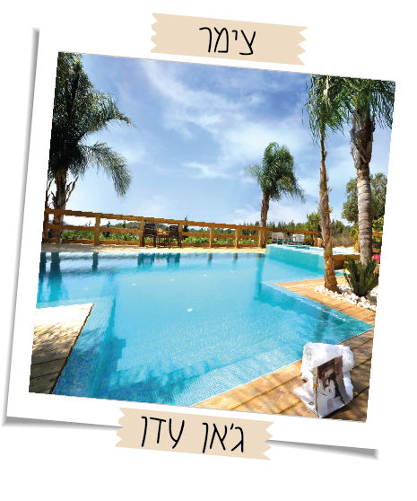

צימרים בצפון
צימרים קשת יהונתן
חווית אירוח ברמת הגולן בקשת יהונתן משלבת אירוח מפנק,טיולים ותכניות ייחודיות
המחברות בין חווית הטבע והנוף באזור לחווית השקט והשלווה הגולניים
במקום יש חדרי אירוח יחידות משפחתיות, אתר קמפינג למשפחות ולקבוצות.
חדרי אירוח ברמת הגולן בקשת יהונתן עוצבו בהשראת הגולן הירוק הכפרי, מאובזרים בכול הנחוץ ומנעימים את השהייה במקום.
מחירים לזוג פלוס ילד בחודשי הקיץ נעים בממוצע החל מ3050 שקל ללילה כולל ארוחת בוקר
לפרטים נוספיםצימרים שביט
צימרים שביט ממוקמים במושב ארבל, ממערב לאגם הכינרת
בצימרים סוויטות מרווחות הכוללות מטבחון,ג׳קוזי,מיטה ועוד
בצימרים שביט הבריכה מחוממת ואפילו יש מרתף יינות
המסעדה, המטבח של ישראל, מסעדת שף בשרית עם תפריט בשרי יחודי שלא תמצאו במקומות רבים
נופש בצימרים שביט הוא נופש שיכול להתאים לזוגות וגם למשפחות
מתאים למי שרוצה חופשה מהנה ומפנקת ועל הדרך להתחבר לטבע
מחירים ללילה לזוג פלוס ילד בחודשי הקיץ נעים בממוצע החל מ700 שקל וארוחת בוקר עולה 56 שקל
לפרטים נוספיםצימרים ג׳אן עדן
מתחם 5 בקתות אירוח זוגיות מאובזרות בכל טוב להשלמת חוויית החופשה . בכל בקתה תמצאו :
מיטה זוגית עטופה במצעים רכים, ג'קוזי זוגי מפנק,חדר
רחצה מרווח הכולל מגבות, תחליב רחצה ושמפו,
מטבחון מאובזר ובו פינת קפה, קומקום חשמלי, מקרר
ומיקרוגל, פינת ישיבה מרווחת,לכל בקתה מרפסת פרטית עם שולחן וכיסאות.
חצר הבקתות מאובזרת בבריכת שחייה, ג'קוזי ספא,מטבח חיצוני, מדשאה, מנגל, ריהוט גן,נדנדות, עצים ופרחי נוי.
הבקתות מחולקות לפי צבעים ובכל צבע מחכה הפתעה אחרת, מתאים במיוחד לזוגות
מחירים לזוג בחודשי הקיץ נעים בממוצע החל מ1000 שקל ללילה
לפרטים נוספיםאחוזת הנוף הצפוני
סוויטות מדהימות,מיוחדות ומפנקות בעלות אבזור ברמה גבוהה
האחוזה מורכבת משלוש סוויטות שכל אחת מהם עולם ומלואו של אירוח זוגי או משפחתיו
חצר נופש מטופחת ומושקעת מקיפה את האחוזה, בריכה פרטית גדולה היא האטרקציה המרכזית, לצד הבריכה פינות ישיבה,
,ערסל מפנק, מדשאה, נדנדה,פינת אוכל ,מיטות שיזוף נוחות בריכה חיצונית מפוארת ועמדת ברביקיו יוקרתית, עשויה אבן.
למי שמחפש חופשה רומנטית יש גם סוויטות שמכילות ג׳קוזי ואם באים עם ילדים אז יש גם חדר שינה שמתאים עבורה
אירוח שמתאים לזוגות,למשפחות לדתיים ועוד
ובסביבה יש גם אטרקציות שאפשר לעשות כמו רכיבה על סוסים,טיולי ג׳יפים,קייאקים ועוד
המחירים ללילה לזוג פלוס ילד בחודשי הקיץ נעים בממוצע החל מ1050 שקל וארוחת בוקר בתוספת 75 שקל לאדם
לפרטים נוספיםצימר אחוזת כינורות
האחוזה הממוקמת מול הכנרת, 4 דקות הליכה מטיילת של טבריה ו-7 דקות הליכה לכנרת, ומעוצבת בסגנון מודרני-כפרי מוקפד.
במתחם אחוזת כינורות הבנוי מאבן עתיקה תמצאו 4 יחידות אירוח:
2 בקתות עץ, ו-2 סוויטות מעוצבות ורחבות ידיים.
בכל יחידות האירוח תמצאו להנאתכם ג'קוזי מרווח.
מפתח יחידות האירוח והסוויטות, ובה פינות ישיבה פסטורליות, נדנדות ובריכת שחיה הפתוחה בכל שעות היממה, המעניקה רגעים בלתי
נשכחים של רעננות בכל רגע שתחפצו בכך.
חצר אחוזת כינורות משקיפה אל נופי הכנרת הקסומים לחוויה של חופש ושלווה.
בחצר יש בריכת שכשוך מחוממת ומקורה בחלקה הבריכה בגודל 3×6 בצורת 8, סאונה יבשה הממוקמת בקצה הצוק משקיפה על נוף פנורמי
מרהיב של הכנרת והרי גולן. ואם לא שבעתם מכל הפינוק הזה, תשמחו לדעת שניתן להזמין עיסויים וטיפולי גוף ליחידות האירוח, בתיאום מראש.
המחירים ללילה לזוג פלוס ילד נעים בממוצע החל מ800 שקל
לפרטים נוספיםצימר חלומות נפתלי
כפר נופש יוקרתי שיגרום לכם להרגיש כמו בתוך חלום - סוויטות מפוארות, מרחבי עד ירוקים, נופים מהפנטים, שלל פינוקים מתוקים
ובעיקר המון הנאה! מלון בוטיק חלומות נפתלי שוכן במושב שדה אליעזר בגליל העליון, מיד אחרי ראש פינה וקרוב לאגמון החולה.
המלון כולל 9 סוויטות מעוצבות ומאובזרות ברמה הגבוהה ביותר.
סוגי סוויטות המתאימות לכל סוג של חופשה, כשכל אחת מהן מרווחת, יוקרתית ובעלת פרטיות מלאה.
בנוסף, חדר אוכל, בריכת שחייה וג'קוזי, מתחם הפעלה לילדים, עמדות ברביקיו, מדשאות למשחקי כדור, כרם גפנים ומטע זיתים.
המחירים ללילה לזוג פלוס ילד בחודשי הקיץ נעים בממוצע החל מ1260 שקל
לפרטים נוספים